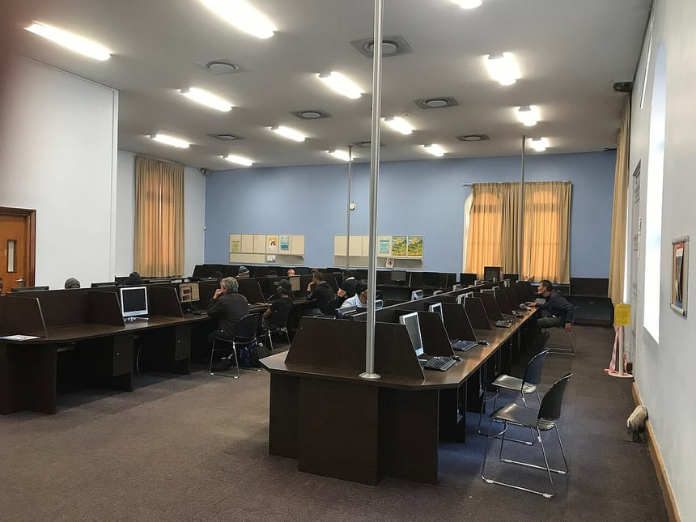

Ce site institutionnel marque une nouvelle étape dans la modernisation des services publics locaux. Il centralise les démarches, l'actualité et les informations pratiques pour les habitants.
Accessible depuis un ordinateur ou un téléphone, le portail permet de consulter les pièces à fournir pour chaque démarche, les horaires des services, l'annuaire institutionnel et l'agenda des événements. Il met aussi en valeur le patrimoine, le tourisme et le potentiel économique de la commune.
Une administration plus proche
Conçu pour être simple et rapide, le site s'inscrit dans la volonté de la municipalité de bâtir une administration moderne, transparente et accessible à tous. De nouvelles fonctionnalités seront ajoutées progressivement, en fonction des besoins exprimés par les usagers.
Vous avez une question, une suggestion ou souhaitez signaler une difficulté ? Contactez la mairie : vos retours nous aident à améliorer ce service.